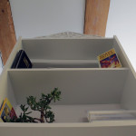
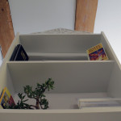
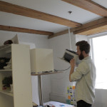
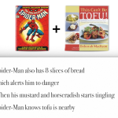
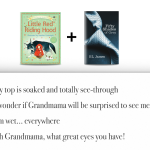
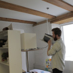
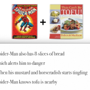
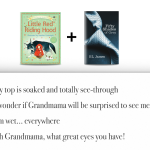

Bookshelf Writer
The absence of the Author is not only a historical fact or an act of writing: it utterly transforms the modern text (Barthes 1998: 4)
Concept
What would happen if a bookshelf suddenly decided to become a writer? What would it write about, how would it react to different inputs and in which ways could it challenge human authors?
To explore these questions the team decided to build a bookshelf that reacted to books placed on it and produced new texts.
The installation worked as an entertaining and humorous interactive poetry generator as well as a critical reflection on remix culture, artificial intelligence and the question of authorship in a world where digital objects obtains more and more agency.
How it works
The shelf produces text by combining words and sentences from the books that are currently placed on it. Every time a new book is placed on the shelf, a .txt file with an excerpt from that particular book is loaded into a Processing sketch, thereby expanding the vocabulary of the bookshelf. Through the use of Markow chains and the RiTA library, new sentences are created that blends the words from the different books in unexpected and chaotic but grammatically meaningful ways.
If no books are placed on the bookshelf, it will use sensor data (light, temperature and speech recognition) as inputs to write poems about loneliness.
As additional sources of input the bookshelf will use sensor data in the form of time, light and temperature to describe feelings of being lonely if no books are placed on it. It will also occasionally listen in on conversations in its proximity and use parts of these in combination with the vocabulary from the books placed on it.
Behind the bookshelf is a hidden printer, which automatically prints out the texts generated.
References:
Barthes, Roland 1998: “The Death of the Author” in Art and Interpretation: An Anthology of Readings in Aesthetics and the Philosophy of Art. Ed. Eric Dayton.


 

 





{kind=link}
{kind=link}
{kind=link}
{kind=link}
{kind=link}
{kind=link}